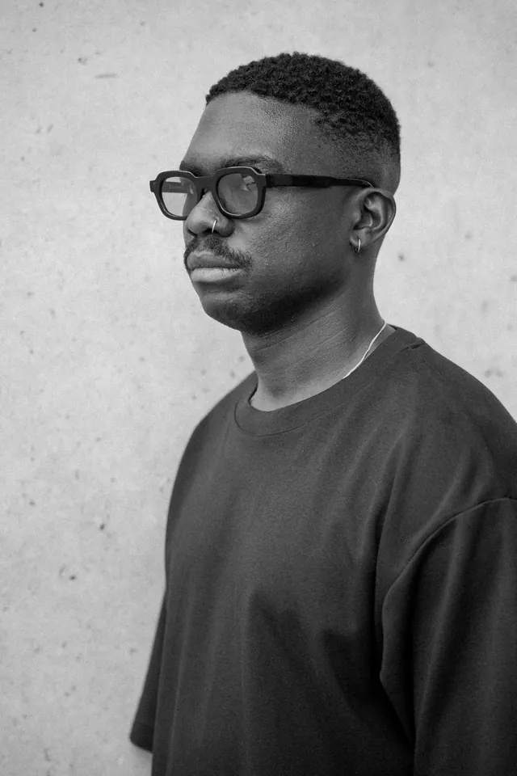
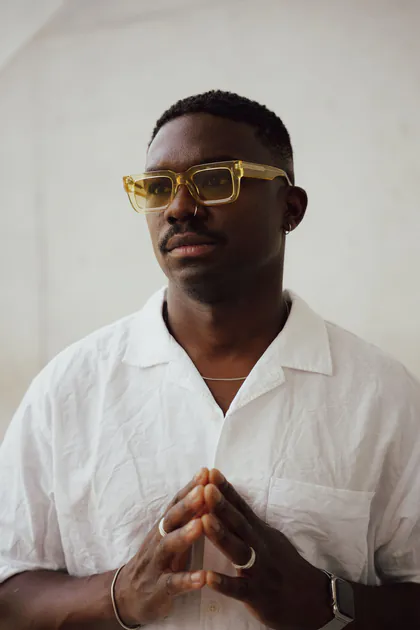
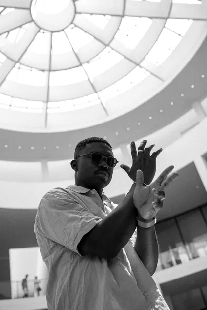
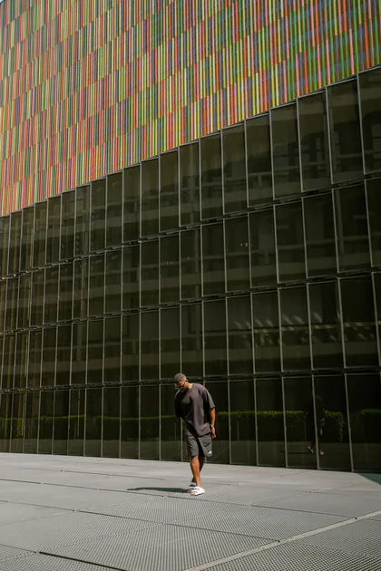
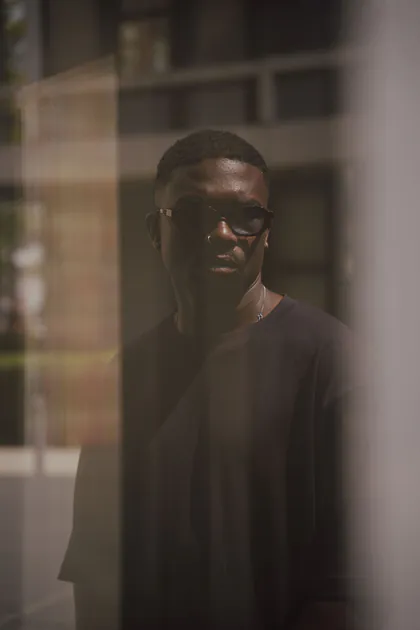

Der deutsch-ghanaische Sound Münchens
Benji Holiday bewegt sich mit seiner Musik zwischen Hip-Hop, Soul und Jazz — vielschichtige Laid-Back-Arrangements, analog entstanden mit befreundeten Musiker:innen.

Das Ergebnis ist ein organischer Sound, der mit verträumten Gitarrenriffs, warmen Pianoklängen und groovigen Basslines eine ganz besondere Atmosphäre schafft. Benji Holiday ist seit seiner Kindheit auf der Bühne zu Hause. Nach ersten musikalischen Gehversuchen, bei denen er auf Kochtöpfen trommelte, wagte sich der Münchner schnell an größere Auftritte heran — von der Grundschul-Theater-AG bis zum Rewe Family Sommerfest, wo er als Will Smith den Song „Wild Wild West" performte.
Später sammelte er bei zahlreichen Open-Mic-Sessions Erfahrung als Freestyle-Rap-Act (u. a. im Bahnwärter Thiel zusammen mit Ferge x Fisherman), legte als DJ in der Münchner Clubszene auf — Rote Sonne, Bob Beaman, Harry Klein — und begann zu singen sowie Gitarre, Bass, Klavier und Schlagzeug zu spielen.
Einflüsse
Inspiriert von Künstlern wie Kendrick Lamar, Tom Misch, Tyler The Creator und Anderson .Paak verwandelte Benji seine in Freestyle-Sessions entstandenen Texte in Songs und bündelt sein über die Jahre gesammeltes Know-how seit 2022 im Projekt Benji Holiday.
„Der Schmerz und die Verletzlichkeit sind in seiner Stimme deutlich zu hören."
Ein tanzbarer, positiv klingender Sound mit melancholischen Texten über persönliche Geschichten — so verarbeitet Benji seine Zeit in der Psychiatrie, zerbrochene Beziehungen und gesellschaftliche Missstände.
Vor der Kamera




Fotos: nicha.image
Der Weg auf die Bühne
Mit „My Boo" erschien am 28.10.2022 die erste Single des Künstlers — über das Ende seiner ersten langjährigen Beziehung, seine große Liebe und die damit verbundenen Rassismuserfahrungen. Mit Hilfe des Münchner DJ Bandit (u. a. bekannt von der Diaspora Crew, Partizan und Exil/Guerillasystem) schaffte Benji den Sprung aus den eigenen vier Wänden auf die Bühnen der Münchner Musik- und Kulturszene und spielte u. a. im Bürgerhaus der Glockenbachwerkstatt sowie bei eigenen Releasekonzerten. Bandit machte ihn auch mit dem Münchner Urgestein Joe Grass (Roger Reckless) bekannt, was die Qualität seiner Aufnahmen auf ein neues Level hob.
Um live mehr zu bieten, gründete Benji die Band „The Barefoot Bunch" und später, gemeinsam mit Leon (Leisure Hippie) und Lewis Wooten, die „Suns of Leisure". Heute ist er mit den Suns of Leisure, mit Stanzi Joy und solo auf Münchens Bühnen unterwegs.
Dass seine Musik ein Lebensgefühl von Freiheit und Gelassenheit vermittelt, kommt nicht von ungefähr: Benji ist erfahrener Surflehrer, Skater und Tänzer — und wenn er nicht gerade an Songs feilt, findet man ihn am Münchner Eisbach oder in den Skateparks der Stadt.